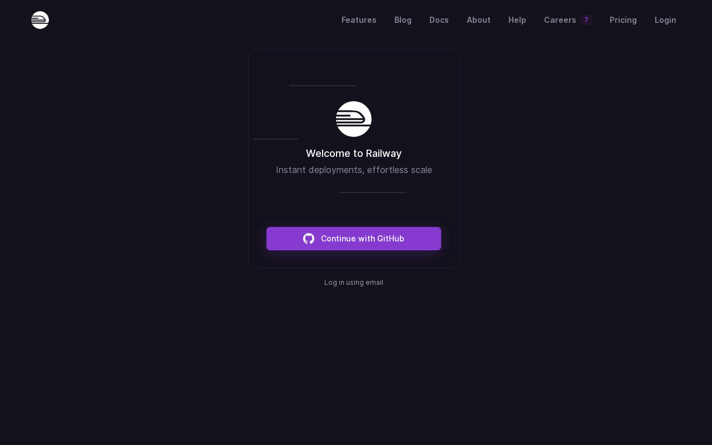
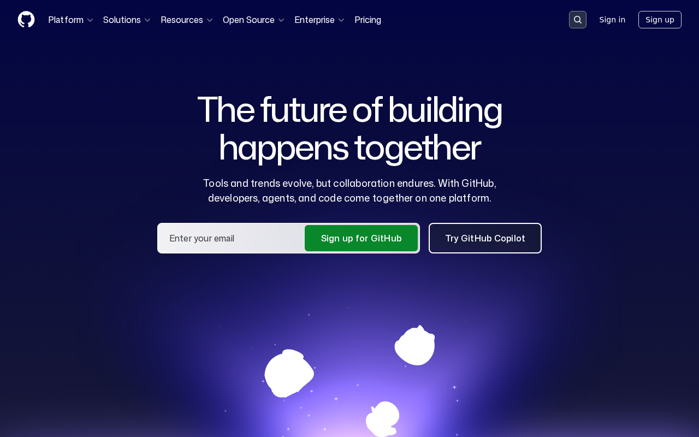
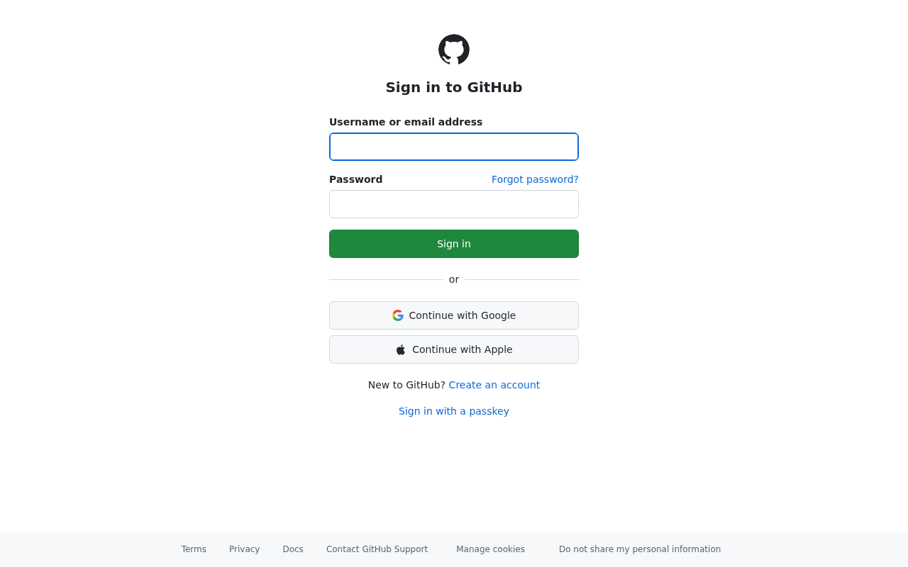
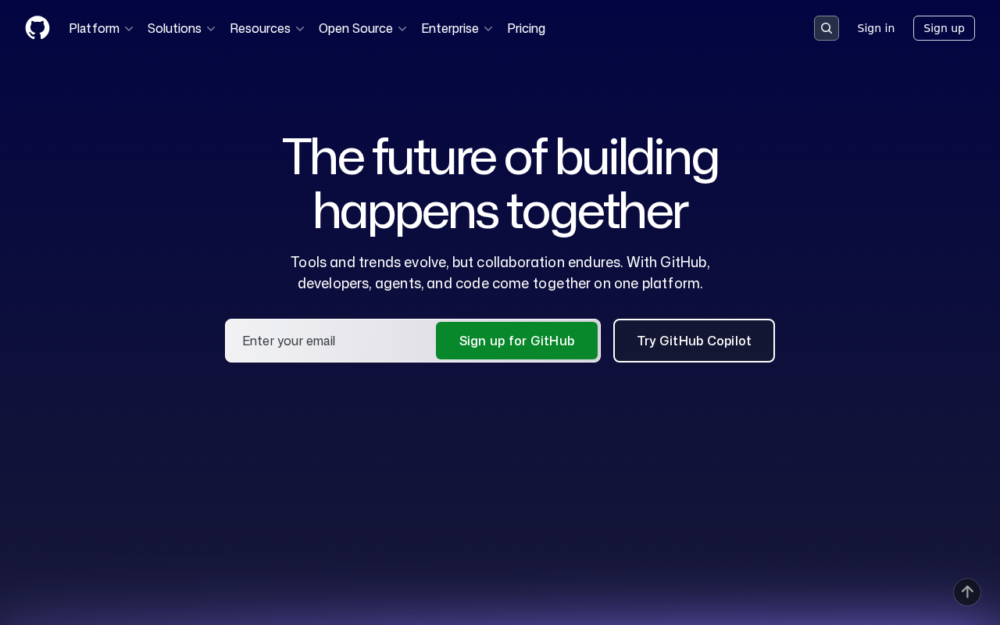
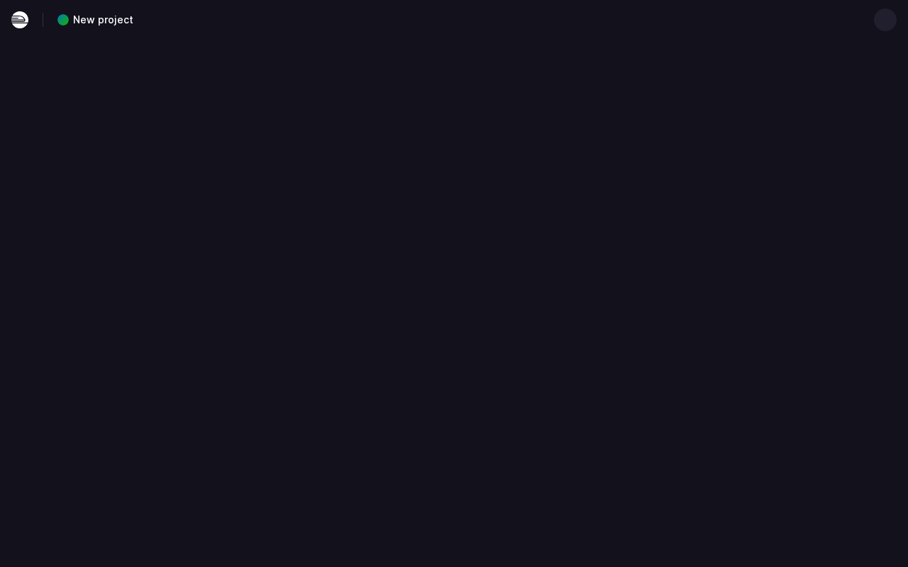
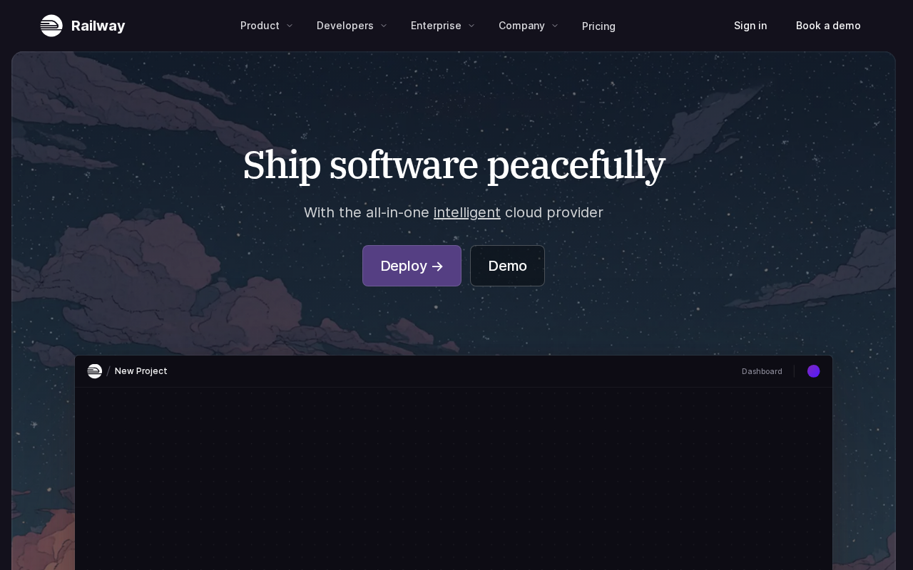
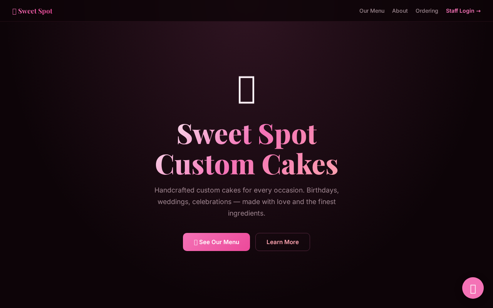
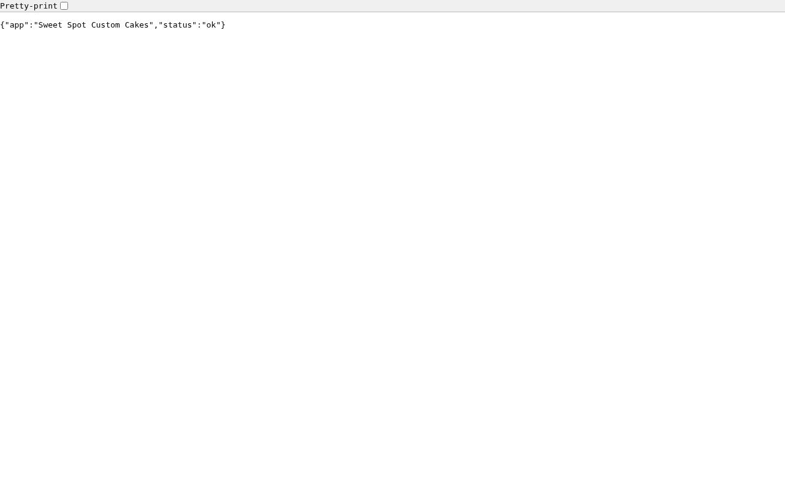
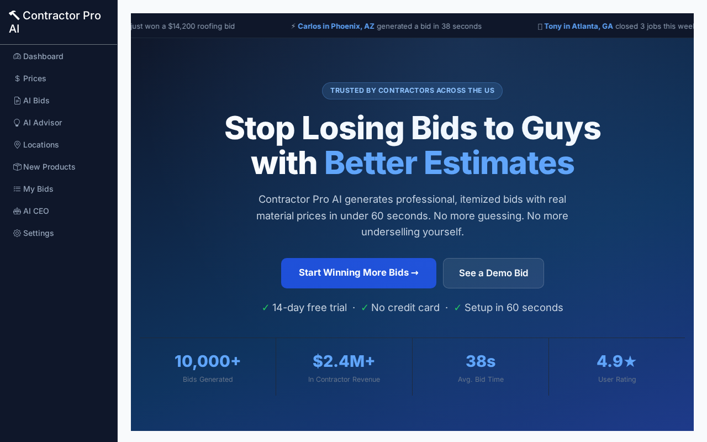
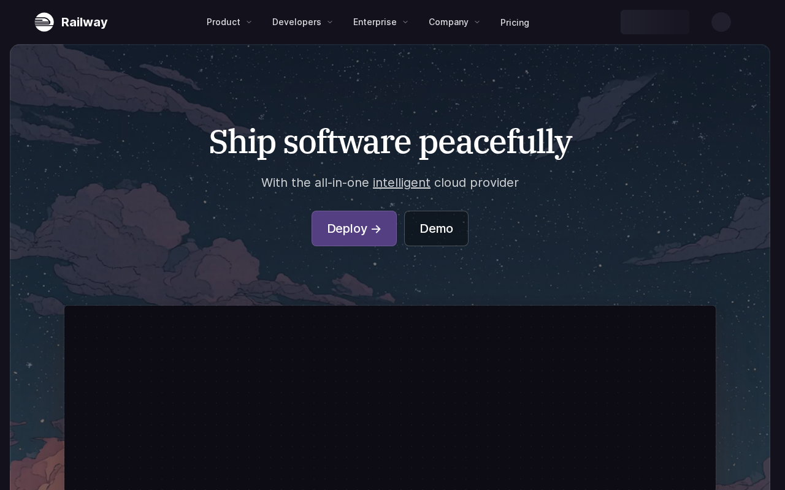

Go from local code to a live URL anyone in the world can visit
Follow each step exactly as shown. Every screenshot is taken from the real app you'll be using. By the end of this lesson, you'll have completed the action shown in the title above.
Railway is the hosting platform where your app will live on the internet. It's free to start — no credit card needed for the free tier.
This is Railway. It's where thousands of developers deploy their apps. Notice the tagline — 'Deploy apps globally, instantly'. That's exactly what we're doing. Click 'Login' in the top right to get started.
Navigate to the Railway login page.

Railway lets you sign in with GitHub, Google, or email. We strongly recommend GitHub — it connects your code repository to Railway automatically, which is how you deploy later. If you don't have GitHub yet, we'll set that up first.
GitHub is where your code is stored before Railway deploys it.

GitHub is your code's home. Think of it like Google Drive for your app's files. Every time you save (push) your code to GitHub, Railway can pick it up and redeploy automatically. Sign up at github.com if you haven't — it's free.
Navigate to create a new repository on GitHub.

This is where you create a new repository (a 'repo') — basically a folder in the cloud for your app's code. Fill in: (1) Repository name — use your app name, no spaces (e.g. my-cake-shop), (2) Set it to Private, (3) Leave everything else as-is. Then click 'Create repository'.
After creating the repo, GitHub shows you the commands to push your code.

After creating your repo, GitHub shows you the exact commands to push your code. You'll run these three commands in your terminal from your app folder. Don't worry — I'll walk you through each one.
Navigate back to Railway to start a new project.
Once logged in to Railway, you'll see your dashboard. Click '+ New Project' to start deploying your app. Railway is about to connect to your GitHub and pull your code.
On the new project screen, Railway gives you several options.

Railway gives you several ways to start. Click 'Deploy from GitHub Repo'. Railway will ask permission to access your GitHub account the first time — click Authorize. Then you'll see a list of your repositories.
After connecting your GitHub repo, Railway starts your first deploy. Before it fully works, you need to add environment variables. In your Railway service: click Variables → Add Variable. You need at minimum: SECRET_KEY (paste any long random text — this is your app's security key) and PORT set to 5000. These are private and never visible in your code.

When you first go to railway.com/new, Railway asks you to log in. Click 'Continue with GitHub'. This grants Railway permission to read your repositories so it can deploy your code. You only do this once.
This is what success looks like.

This is Sweet Spot Custom Cakes — a real app built using this exact process and deployed on Railway. It has a real URL, runs 24/7, and was built using the same method you're learning right now. Your app will look just like this — with your business name, your colors, and your data.
Every app we build includes a /health endpoint.

Every app you build includes a /health endpoint at yourapp.up.railway.app/health. It returns a simple JSON response: status: ok. Railway uses this to confirm your app started correctly. If it returns ok, your deploy succeeded. If it fails, Railway shows you the error in the build log so you can fix it.
Every app in this course is already live on Railway.

Here's another example: Contractor Pro AI — a full job request and quoting app for contractors, built and deployed on Railway using this same process. Notice the URL: contractor-pro-ai-production.up.railway.app. Every app you build in this course gets a URL like this. Real. Live. Shareable.
Once deployed, updating is effortless.

Once your app is live, updating it is simple. Make a change in your code → push it to GitHub → Railway detects the push and redeploys automatically. No manual steps. No server management. No downtime. Railway handles all of it. Your workflow becomes: code it, push it, it's live.